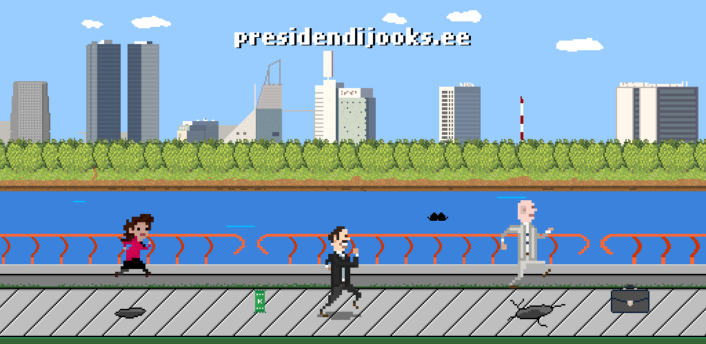

Presidendijooks
Aita oma lemmik kandidaadil presidendilossi poole joosta.
Kogu oma kangelase lemmik asju ja väldi takistusi. Kes Kadriorgu jõuab on võitja! Kadrioruni on ainult 2500 meetrit.
Statistika
Presidendi kandidaadid on kokku jooksnud: 1295km 384m
Pikim järjestikune jooks: 902 meetrit
Valijameeste vooru Edetabel
Kadriorgu jõudnud 10 korda
Parim jooks: 902m
Kokku jooksnud: 117499m
Kadriorgu jõudnud 7 korda
Parim jooks: 814m
Kokku jooksnud: 128916m
Kadriorgu jõudnud 17 korda
Parim jooks: 666m
Kokku jooksnud: 287512m
Kadriorgu jõudnud 13 korda
Parim jooks: 690m
Kokku jooksnud: 201424m
Riigikogu voorude Edetabel
Parim jooks: 611m
Kokku jooksnud: 254km 480m
Parim jooks: 558m
Kokku jooksnud: 128km 480m
Parim jooks: 618m
Kokku jooksnud: 178km 782m
Mängust meedias:
- Delfi Forte - Eesti presidendikandidaadid kalpsavad nüüd ka videomängus Kadrioru lossi poole
- Raadio2, Tehnikaminutid 6.september 2016
- Geenius.ee - Presidendijooksu mängus saad aidata Kallasel, Repsil või Jõksil lossi poole joosta
- Aita presidendikandidaatidel Kadrioru lossi poole joosta
- Geenius.ee - Presidendijooksu mängus saad aidata Kallasel, Repsil või Jõksil lossi poole joosta
Mängu looja:
Indrek VändrikMängus kasutatud muusika ja helid:
- Test Drive by Zapac (c) copyright 2010 Licensed under a Creative Commons Attribution Noncommercial (3.0) license. http://dig.ccmixter.org/files/Zapac/26047
- http://soundbible.com/1601-Mario-Jumping.html
- http://www.freesound.org/people/afleetingspeck/sounds/232444/
- http://www.freesound.org/people/bradwesson/sounds/135936/
- http://freesound.org/people/Koops/